The Eco-morphodynamic Modeling Lab studies how coastal and riverine landforms develop — to understand the drivers that create the landscape we are living in today.
About the lab
We study how coastal and riverine landforms develop to understand the drivers that create the landscape we live in today. Living organisms — salt marshes, mangroves, worms, biofilms and humans — continuously shape this world, yet we still do not fully understand how.
How organisms and physical processes influence one another to shape landscapes.
Learn more →Coupling hydrodynamics, sediment transport and ecology in numerical models.
Learn more →The evolution of rivers, deltas and estuaries and the ecology within them.
Learn more →Field and satellite data to validate models and track landscape change.
Learn more →News
Updates, new members, papers, and milestones from the EcoMoMo Lab.
The team
Principal Investigator & Postdocs
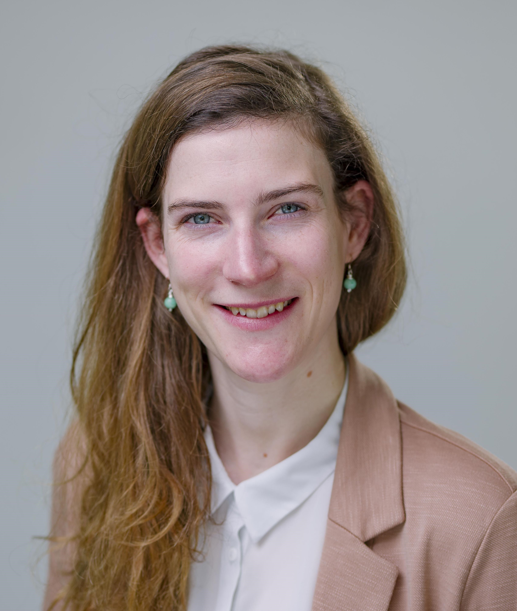
Assistant Professor, Civil & Environmental Engineering
Research Interests: Biophysical Feedbacks, Eco-Morphodynamic Modeling, Fluvial and Coastal Geomorphology and Ecology, Remote Sensing.
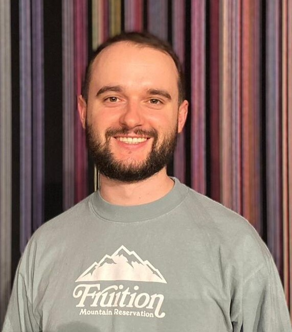
Postdoctoral Researcher
During his PhD, Nelson studied how river water moves through floodplains during high flows, focusing on how natural levee topography controls the exchange of water, sediment and solutes between a river and its floodplain across a wide range of discharges, using models including ADCIRC, ANUGA and HEC-RAS. At LSU he is developing an open-source model that dynamically couples vegetation with Delft3D Flexible Mesh.
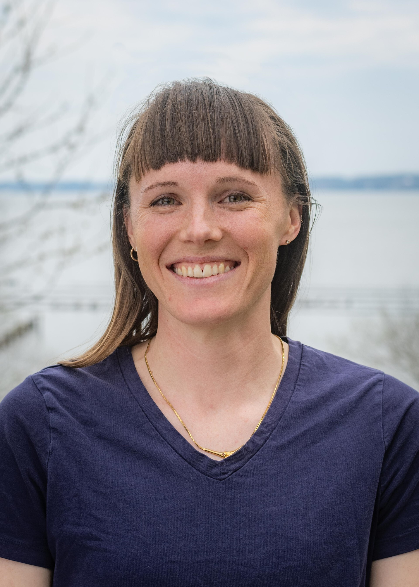
Postdoctoral Researcher
Research Interests: Coastal Geomorphology, Carbon Cycling, Morphodynamic Modeling, Sea-Level Rise.
PhD Students
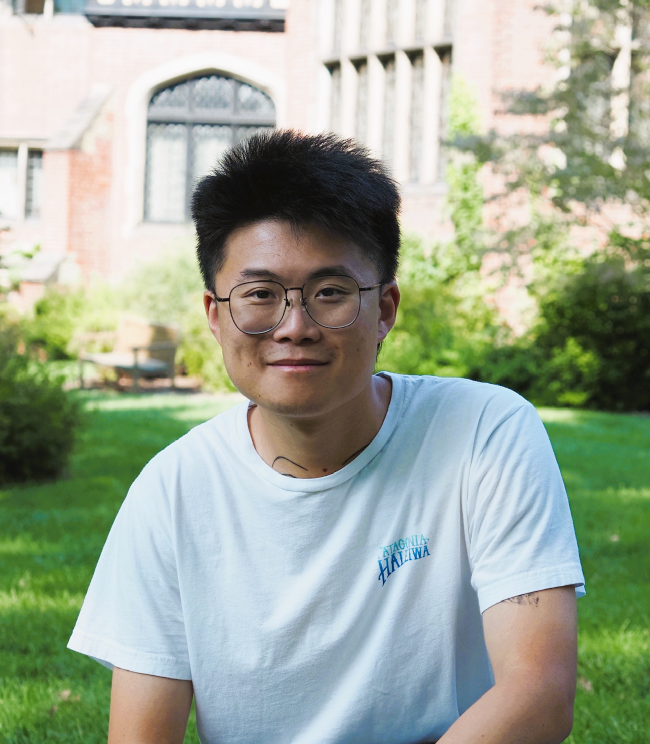
PhD Student, Civil Engineering · Fall 2024 – 2028
Dissertation: The Impact of Unsteady Discharge and Sediment Supply on Deltaic Sediment Transport and Morphology.
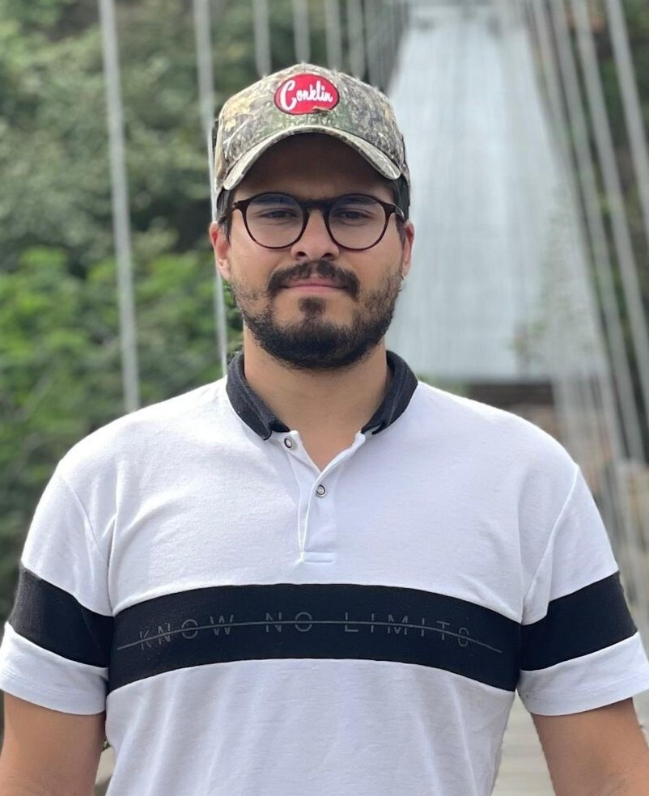
PhD Student, Coastal & Ecological Engineering · Fall 2024 – 2028
Dissertation: Influence of Dynamic Vegetation on the Morphodynamics of Deltas and their Position in the Galloway Triangle.
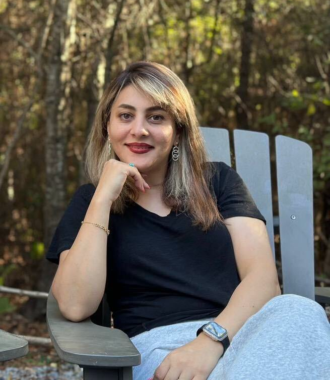
PhD Researcher in Coastal Eco-Morphodynamic Modeling · Summer 2026 – 2029
Research Interests: Coastal Wetland Evolution, Vegetation–Flow–Sediment Interactions, Marsh Accretion, Dynamic Vegetation Modeling, and Nature-Based Coastal Restoration.
Master’s Students
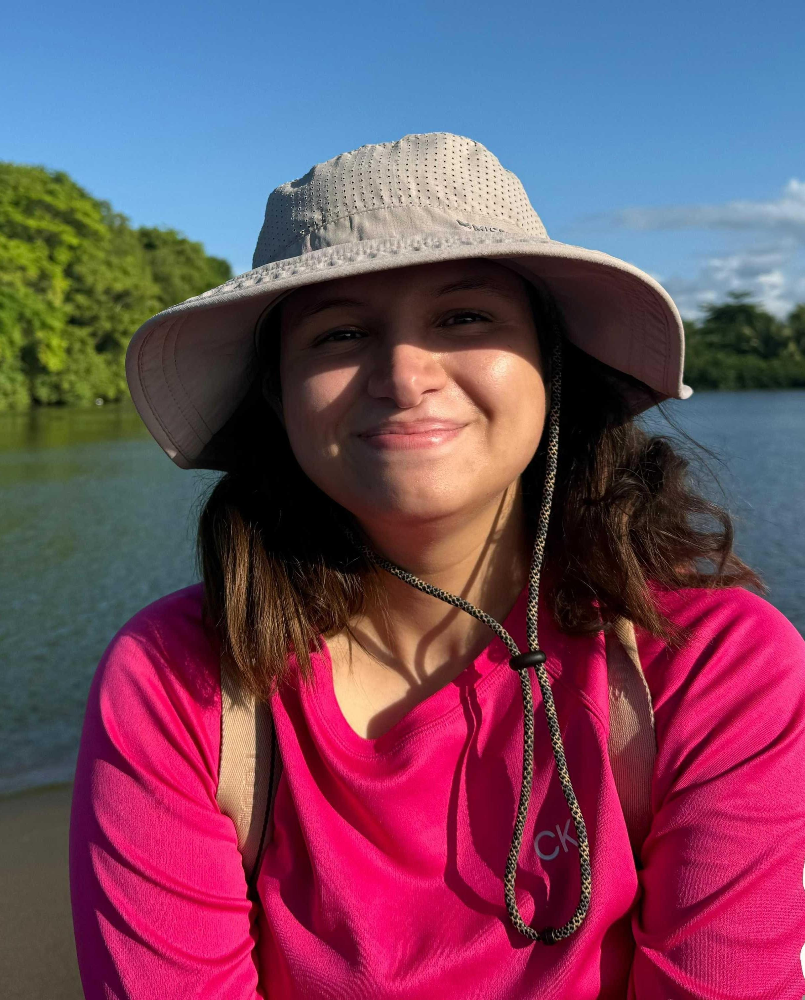
MS Student, Coastal & Ecological Engineering · Spring 2026 – 2029
Thesis: Modeling Deltaic Vegetation Establishment under Varying Grid Size Resolutions.
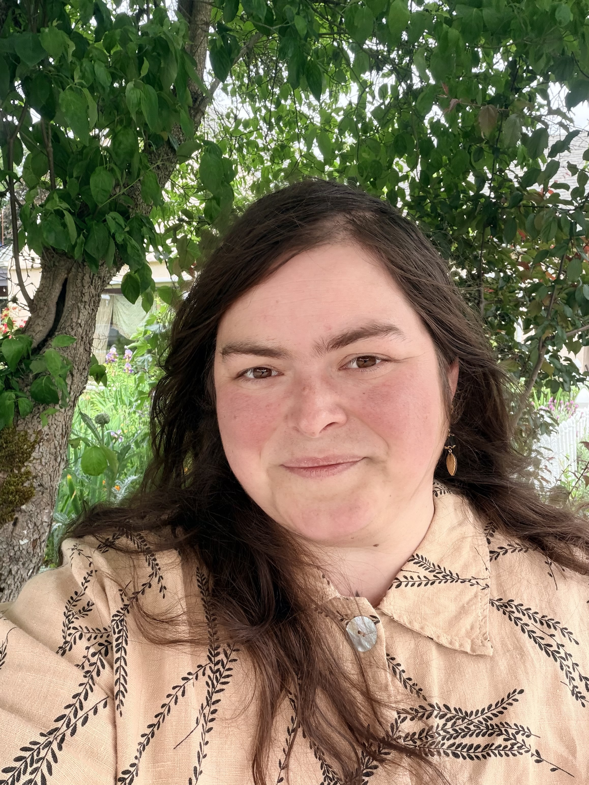
MS Student, Coastal & Ecological Engineering · Fall 2026 – 2029
Thesis: Quantifying Wetland Accretion and Change in Response to Storms through Statistical Analysis and Modeling. · Funded by the Coastal Science Assistantship Program, Louisiana Coastal Protection and Restoration Authority
Undergraduate Researchers
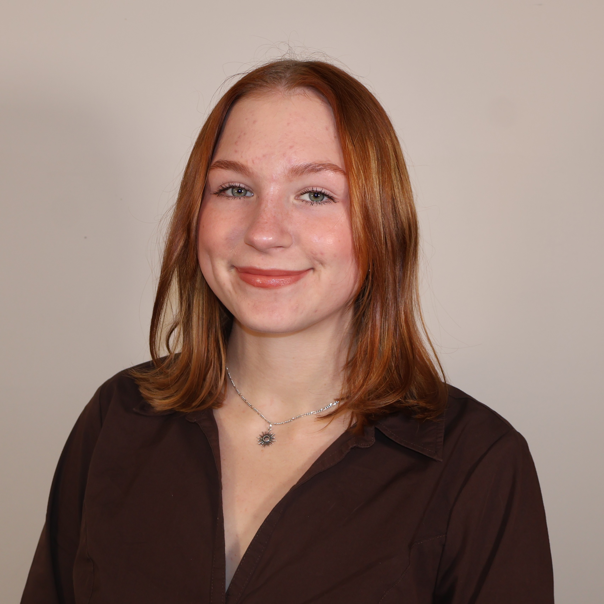
BS student in Biological Engineering · Expected graduation in 2026
Student Research Assistant: CRMS Organic Accretion Data Analysis and Machine-Learning in Python.
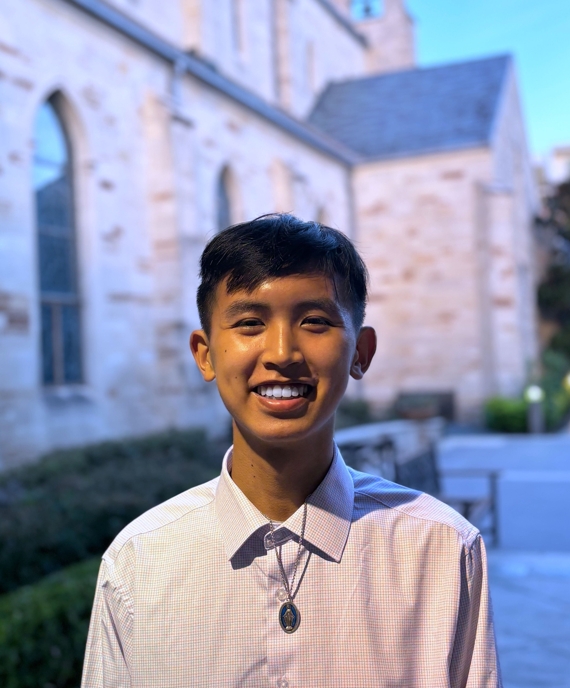
BS Student in Civil Engineering · Expected graduation in 2026
Student Research Assistant: Eco-morphodynamic Modeling of Managed Crevasse Splays in the Birdfoot Delta.
Projects & resources
Current projects
A coupled hydrodynamic–ecological modeling study. We are modeling vegetation establishment in Wax Lake Delta to assess changes in inundation and flow velocities under different vegetation cover. ANUGA and dorado let us study the ecosystem-engineering effect of various vegetation species and how it shapes the particle pathways of water and sediment In addition, we assess the impacts of grid size effects on the solution of the hydrodynamics and the feedbacks with vegetation.
PREDICT develops practical and accurate tools for predicting the evolution of coastal environments from short-term to centennial time scales. We assess the role of multiple vegetation communities on large-scale deltaic changes and their implications for restoration design and nature-based solutions.
Past projects
Resources
We are committed to publishing our data and source code open-access to support transparency, reproducibility, and the advancement of science. Our latest modeling codes are available on our GitHub page, and published datasets live in open-access repositories.
Useful links
Publications
A list of some key publications from the lab. For the full list, see Google Scholar.
Brückner, M.Z.M., Nicholas, A.P., Aalto, R.E., Ashworth, P.J., Best, J., Dunne, T., & Paes de Almeida, R. Dams trigger long-term river-floodplain decoupling in dynamic Andean foreland rivers. Science Advances.
Brückner, M.Z.M., Coco, G., & Kleinhans, M.G. Modeling the adaptation of estuarine morphology to macrobenthic bioturbation and sea level rise. Estuarine, Coastal and Shelf Science, 313, 109107.
Brückner, M.Z.M., Aalto, R.E., Best, J., Paes de Almeida, R., Nicholas, A.P., Ashworth, P.J., & Ianniruberto, M. Bank strength variability and its impact on the system-scale morphodynamics of the upper Amazon River in Brazil. Geology, 52(7), 533–538.
Boechat Albernaz, M., Brückner, M.Z.M., van Maanen, B., van der Spek, A.J.F., & Kleinhans, M.G. Vegetation reconfigures barrier coasts and affects tidal basin infilling under sea level rise. Journal of Geophysical Research: Earth Surface, 128(4), e2022JF006703.
Waldschläger, K., Brückner, M.Z.M., Carney Almroth, B., Hackney, C.R., Adyel, T.M., Alimi, O.S., Belontz, S.L., et al. Learning from natural sediments to tackle microplastics challenges: a multidisciplinary perspective. Earth-Science Reviews, 228, 104021.
Brückner, M.Z.M., Braat, L., Schwarz, C., & Kleinhans, M.G. What came first, mud or biostabilizers? Elucidating interacting effects in a coupled model of mud, saltmarsh, microphytobenthos, and estuarine morphology. Water Resources Research, 56(9), e2019WR026945.
Xie, D., Schwarz, C., Brückner, M.Z.M., Kleinhans, M.G., Urrego, D.H., Zhou, Z., & Van Maanen, B. Mangrove diversity loss under sea-level rise triggered by bio-morphodynamic feedbacks and anthropogenic pressures. Environmental Research Letters, 15(11), 114033.
Brückner, M.Z.M., Schwarz, C., van Dijk, W.M., van Oorschot, M., Douma, H., & Kleinhans, M.G. Salt marsh establishment and eco-engineering effects in dynamic estuaries determined by species growth and mortality. Journal of Geophysical Research: Earth Surface, 124(12), 2962–2986.
Opportunities
Currently available opportunities are posted here. If you have an idea for a BS, MS or PhD project that excites you and aligns with our research, don't hesitate to reach out to mbruckner@lsu.edu.
Current open position
There are currently no open positions in the EcoMoMo Lab.
Gallery
Click tiles to see more.
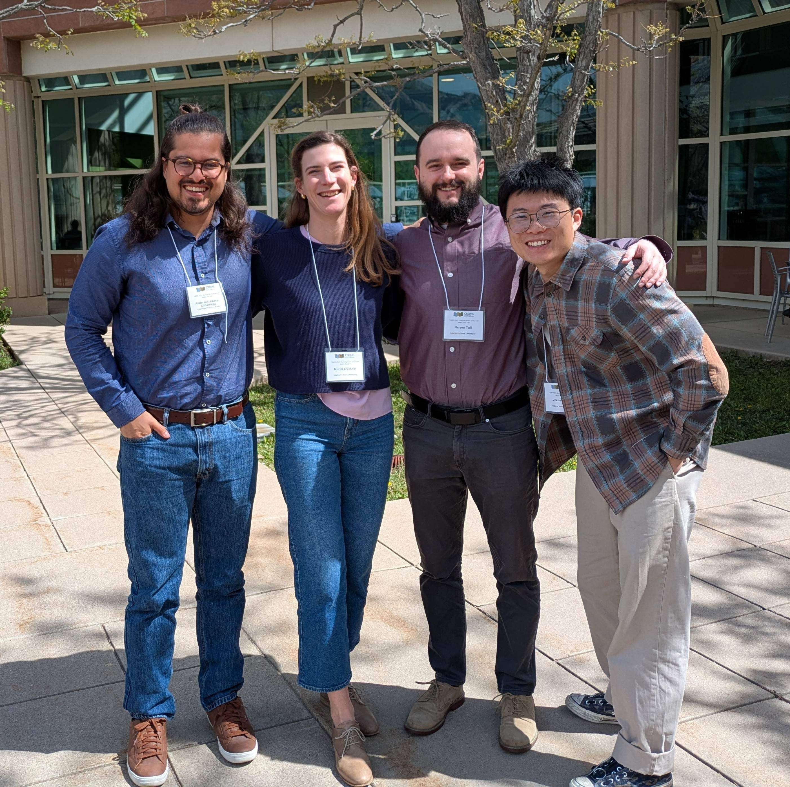
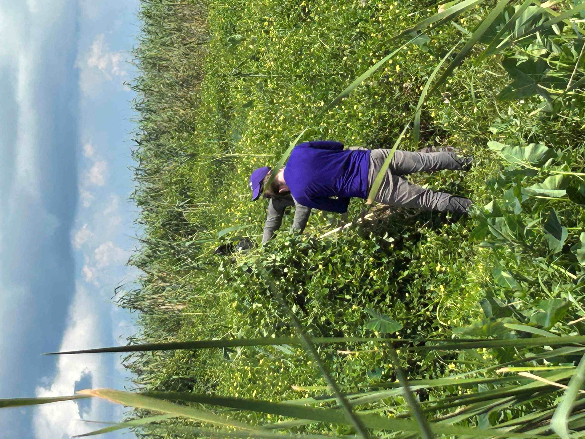
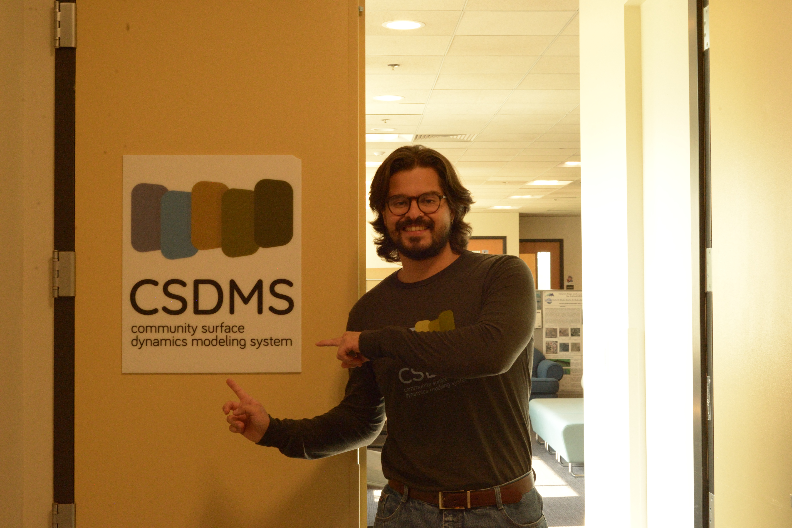
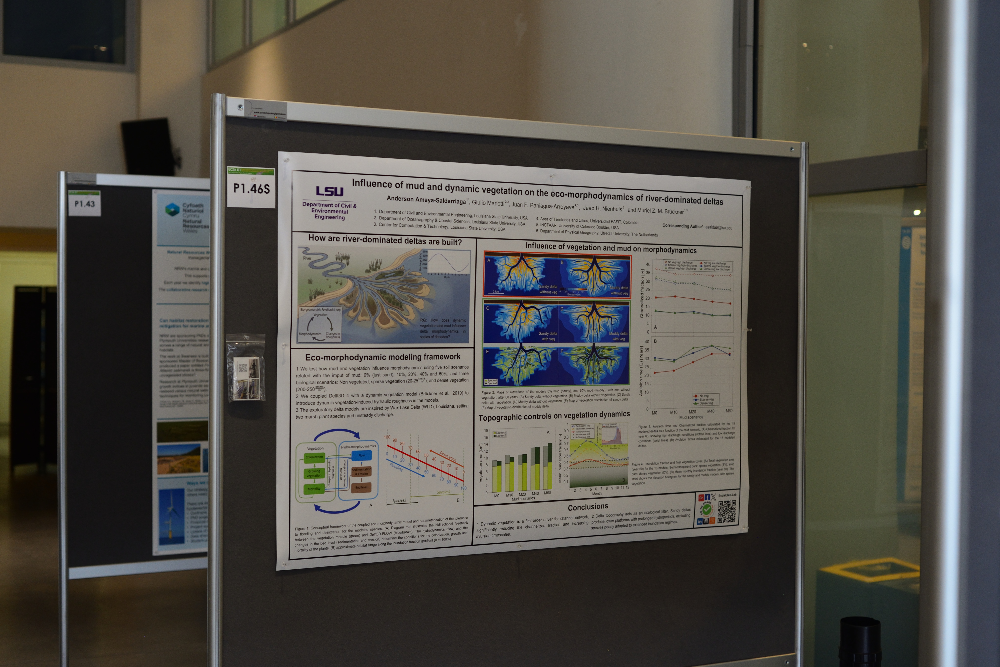
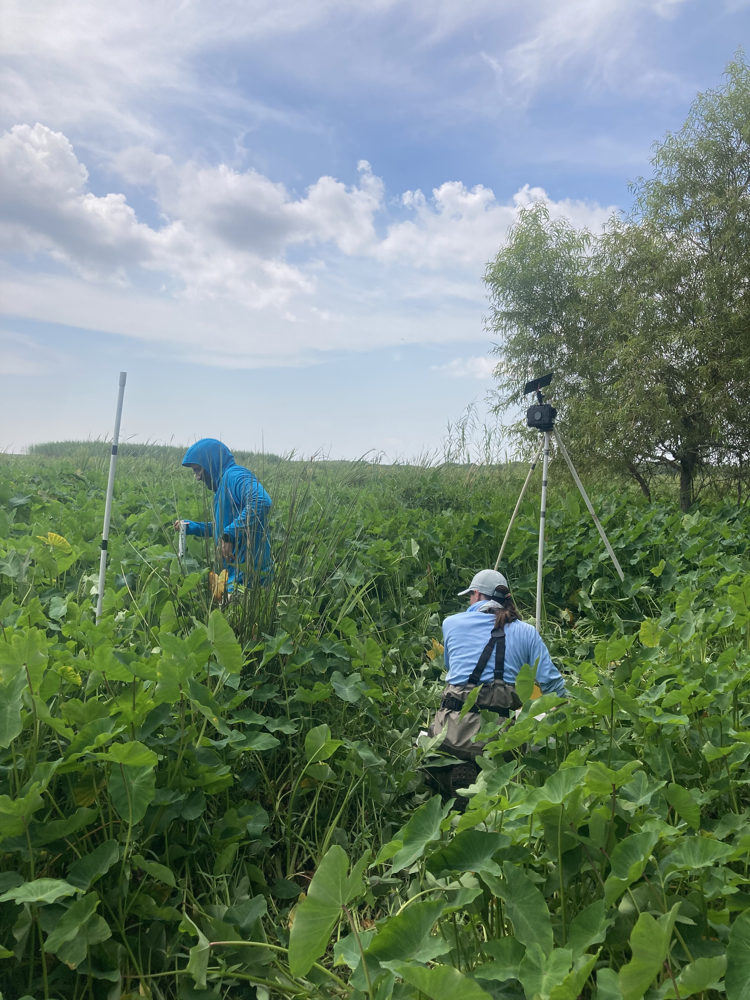
Research area
Living organisms — from salt marshes and mangroves to worms, biofilms and humans — continuously reshape our coasts and rivers, while moving water and sediment reshape the organisms' habitat in return. We study these two-way biophysical feedbacks, because understanding how life and landscape influence one another is central to predicting how these systems evolve and respond to environmental change.
Research area
We develop and apply numerical eco-morphodynamic models that couple physical processes — hydrodynamics, sediment transport and morphodynamic change — with the ecological and biological processes of the species that alter the physical environment. We build these using tools such as Delft3D, ANUGA and dorado, combined with dynamic ecological models written in MATLAB and Python.
Research area
We study how rivers, deltas and estuaries — and the ecosystems within them — evolve over time, from channel migration and delta growth to marsh and wetland dynamics. These processes play out over timescales ranging from single floods and storms to years, decades and millennia, shaping the landscapes we live in today.
Research area
We combine field measurements with satellite and other remote-sensing data to observe how landscapes change and to validate our models. Linking real-world observations with simulations lets us test whether our models capture the processes that actually drive the development of our coasts and rivers.
Gallery
Field data collection in the Birdsfoot Delta, Louisiana. We investigate marsh inundation and hydroperiod via cameras and water level sensors.
Camera retrieval in a Phragmites marsh in the Birdsfoot Delta, LA.
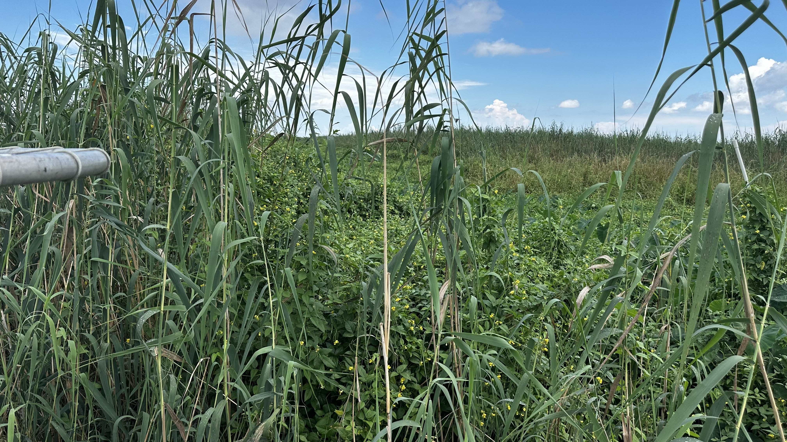
Delta island marsh vegetation in the summer.
Gallery
The lab attended the Community Surface Dynamics Modeling System (CSDMS) Annual Meeting in Boulder, Colorado, where we presented ongoing research and built new collaborations.
Gallery
We went to the Wax Lake Delta to deploy our cameras and take some sediment samples in September 2026.
Freshwater marsh vegetation.
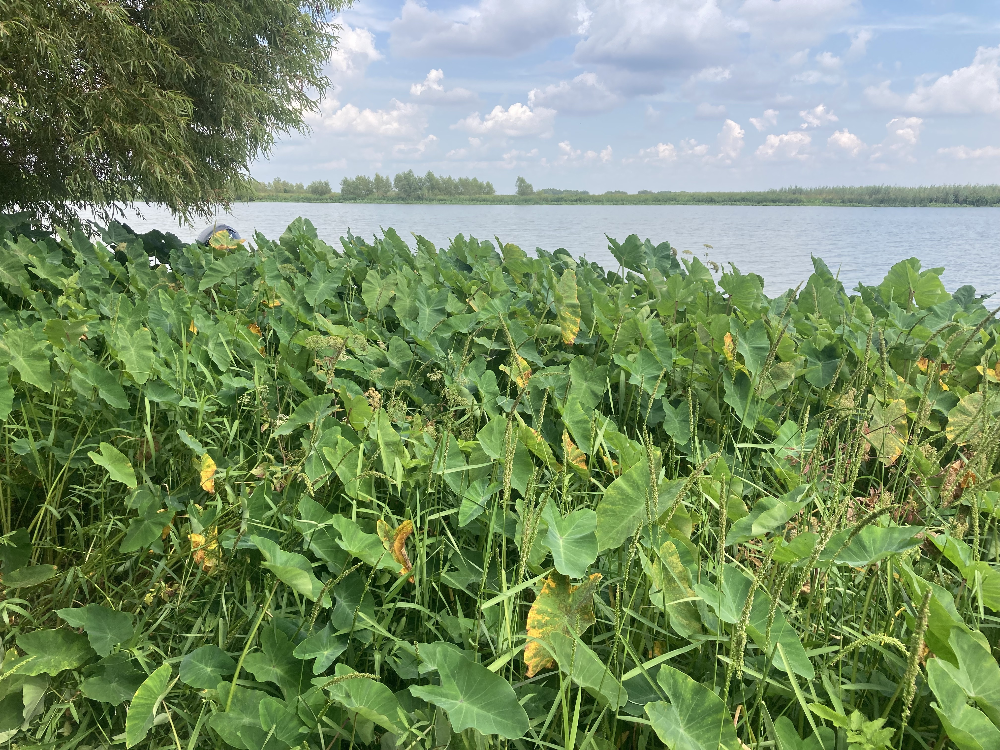
Gallery
Anderson attended the CSDMS Earth Surface Processes Institute (ESPIn) in 2026, Boulder, Colorado, where he learned to use the community's earth-surface models.

Gallery
Anderson presented his research at the ECSA 61 Conference in Brussels, Belgium, 24-27 August 2026.